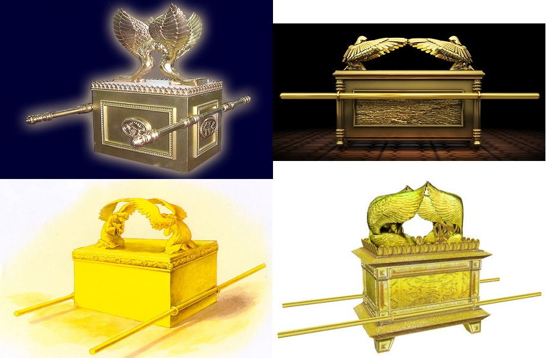
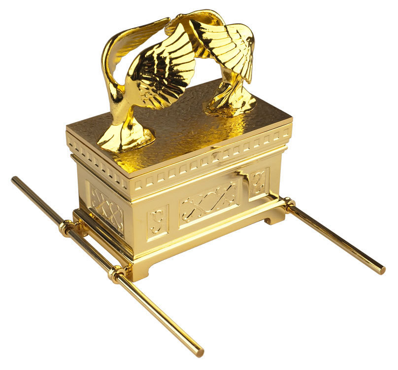

| 讀 | 默想 |
|---|---|
| 1 比撒列用皂莢木做櫃，長二肘半，寬一肘半，高一肘半。 2 裡外包上精金，四圍鑲上金牙邊， 3 又鑄四個金環，安在櫃的四腳上：這邊兩環，那邊兩環。 |
25:10 「要用皂莢木做一櫃，長二肘半，寬一肘半，高一肘半。 11 要裡外包上精金，四圍鑲上金牙邊。 12 也要鑄四個金環，安在櫃的四腳上；這邊兩環，那邊兩環。 |
|  | 用來抬約櫃的「四個金環，安在櫃的四腳上」，這個設計重心過高，抬起來不穩當。而陳設餅桌「安環子的地方是挨近橫樑」（14節），香壇的金環也是「安在牙子邊以下，在壇的兩旁，兩根橫撐上」（27節），這些設計就不會有重心過高的問題。 但比撒列卻沒有向神提出改進意見，而是完全照著山上的樣式去做。因為神的道路高過人的道路，神的意念高過人的意念（賽五十五9）。實際上，神這樣設計的目的，就是要人把約櫃高舉過肩，象徵高舉基督、高舉神的見證。 |
| 4 用皂莢木做兩根槓，用金包裹。 5 把槓穿在櫃旁的環內，以便抬櫃。 |
13 要用皂莢木做兩根槓，用金包裹。 14 要把槓穿在櫃旁的環內，以便抬櫃。 |
| 6 用精金做施恩座，長二肘半，寬一肘半。
7 用金子錘出兩個基路伯來，安在施恩座的兩頭， 8 這頭做一個基路伯，那頭做一個基路伯，二基路伯接連一塊，在施恩座的兩頭。 9 二基路伯高張翅膀，遮掩施恩座；基路伯是臉對臉，朝著施恩座。  | 15 這槓要常在櫃的環內，不可抽出來。 16 必將我所要賜給你的法版放在櫃裡。 17 要用精金做施恩座（施恩：或譯蔽罪；下同），長二肘半，寬一肘半。 18 要用金子錘出兩個基路伯來，安在施恩座的兩頭。 19 這頭做一個基路伯，那頭做一個基路伯，二基路伯要接連一塊，在施恩座的兩頭。 20 二基路伯要高張翅膀，遮掩施恩座。基路伯要臉對臉，朝著施恩座。 21 要將施恩座安在櫃的上邊，又將我所要賜給你的法版放在櫃裡。 22 我要在那裡與你相會，又要從法櫃施恩座上二基路伯中間，和你說我所要吩咐你傳給以色列人的一切事。」 說明：1-9節記錄了建造約櫃的過程，完全遵照二十五10-22節神在山上的指示，但少了二十五章15-16，21-22節，因為這幾節不是製造的過程內容。 這些細節見證了神親自呼召和管理的工人對神順服：「要謹慎做這些物件，都要照著在山上指示你的樣式（二十五40）。 |
| 10 他用皂莢木做一張桌子，長二肘，寬一肘，高一肘半， 11 又包上精金，四圍鑲上金牙邊。 |
25:23 「要用皂莢木做一張桌子，長二肘，寬一肘，高一肘半。 24 要包上精金，四圍鑲上金牙邊。 |
| 12 桌子的四圍各做一掌寬的橫樑，橫樑上鑲著金牙邊， | 25 桌子的四圍各做一掌寬的橫樑，橫樑上鑲著金牙邊。 |
| 13 又鑄了四個金環，安在桌子四腳的四角上。 14 安環子的地方是挨近橫樑，可以穿槓抬桌子。 15 他用皂莢木做兩根槓，用金包裹，以便抬桌子； 16 又用精金做桌子上的器皿，就是盤子、調羹，並奠酒的瓶和爵。 |
26 要做四個金環，安在桌子的四角上，就是桌子四腳上的四角。 27 安環子的地方要挨近橫樑，可以穿槓抬桌子。 28 要用皂莢木做兩根槓，用金包裹，以便抬桌子。 29 要做桌子上的盤子、調羹，並奠酒的爵和瓶；這都要用精金製作。 30 又要在桌子上，在我面前，常擺陳設餅。」 此處描述建造會幕的經段較為簡單，重點在製作過程，而不在用途。10-16節記錄了建造陳設餅桌的過程，完全遵照二十五23-29節神在山上的指示。 |
| 禱告：親愛的天父上帝，祢題名呼召了比撒列，照山上的樣式完成了約櫃。所以祢是與百姓立約的神。施恩座，表示祢是赦罪與恩典的神。陳設餅桌，表示祢是供應百姓靈糧的神。這些事工不只是一個人獨立完成，要有一個團隊。所以祢是建立團隊事奉的神。祢讓摩西清楚指示製作的細節，並且詳細記錄。所以祢是記念每一個忠心勞苦服事者的神。主啊，我感謝祢、讚美祢。懇求祢幫助我。忠心地在教會的事奉和小組的參與。使我能夠參與在教會建造的團隊中。奉耶穌基督的名禱告，阿們。 | |
| 37:17 他用精金做一個燈臺；這燈臺的座和幹，與杯、球、花，都是接連一塊錘出來的。 37:18 燈臺兩旁杈出六個枝子：這旁三個，那旁三個。 37:19 這旁每枝上有三個杯，形狀像杏花，有球有花；那旁每枝上也有三個杯，形狀像杏花，有球有花。從燈臺杈出來的六個枝子都是如此。 37:20 燈臺上有四個杯，形狀像杏花，有球有花。 37:21 燈臺每兩個枝子以下有球，與枝子接連一塊；燈臺杈出的六個枝子都是如此。 37:22 球和枝子是接連一塊，都是一塊精金錘出來的。 37:23 用精金做燈臺的七個燈盞，並燈臺的蠟剪和蠟花盤。 37:24 他用精金一他連得做燈臺和燈臺的一切器具。 |
25:31 「要用精金做一個燈臺。燈臺的座和幹與杯、球、花，都要接連一塊錘出來。 25:32 燈臺兩旁要杈出六個枝子：這旁三個，那旁三個。 25:33 這旁每枝上有三個杯，形狀像杏花，有球有花；那旁每枝上也有三個杯，形狀像杏花，有球有花。從燈臺杈出來的六個枝子都是如此。 25:34 燈臺上有四個杯，形狀像杏花，有球，有花。 25:35 燈臺每兩個枝子以下有球與枝子接連一塊。燈臺出的六個枝子都是如此。 25:36 球和枝子要接連一塊，都是一塊精金錘出來的。 25:37 要做燈臺的七個燈盞。祭司要點這燈，使燈光對照。 25:38 燈臺的蠟剪和蠟花盤也是要精金的。 25:39 做燈臺和這一切的器具要用精金一他連得。 |
上圖：現代以色列國徽是一個由橄欖圍繞的金燈檯，這個金燈檯是根據提多凱旋門上的圖案為藍本設計的。 |
17-24節記錄了建造金燈檯的過程，完全遵照二十五31-39節神在山上的指示（參見二十五31-39注解），重量完全相同。但這裡省略了二十五37b，因為那些指示在支搭帳幕時才需要。 |
| 37:25 他用皂莢木做香壇，是四方的，長一肘，寬一肘，高二肘，壇的四角與壇接連一塊； 37:26 又用精金把壇的上面與壇的四面並壇的四角包裹，又在壇的四圍鑲上金牙邊。 37:27 做兩個金環，安在牙子邊以下，在壇的兩旁、兩根橫撐上，作為穿槓的用處，以便抬壇。 37:28 用皂莢木做槓，用金包裹。 37:29 又按做香之法做聖膏油和馨香料的淨香。 |
30:1 「你要用皂莢木做一座燒香的壇。2 這壇要四方的，長一肘，寬一肘，高二肘；壇的四角要與壇接連一塊。 30:3 要用精金把壇的上面與壇的四圍，並壇的四角，包裹；又要在壇的四圍鑲上金牙邊。 30:4 要做兩個金環安在牙子邊以下，在壇的兩旁，兩根橫撐上，作為穿槓的用處，以便抬壇。 30:5 要用皂莢木做槓，用金包裹。 30:23 「你要取上品的香料，就是流質的沒藥五百舍客勒，香肉桂一半，就是二百五十舍客勒，菖蒲二百五十舍客勒， 30:24 桂皮五百舍客勒，都按著聖所的平，又取橄欖油一欣， 30:25 按做香之法調和做成聖膏油。 30:34 耶和華吩咐摩西說：「你要取馨香的香料，就是拿他弗、施喜列、喜利比拿；這馨香的香料和淨乳香各樣要一般大的分量。 30:35 你要用這些加上鹽，按做香之法做成清淨聖潔的香。 |
| 25:40 要謹慎做這些物件，都要照著在山上指示你的樣式。」 | 25-29節記錄了建造香壇、聖膏油和香的過程，完全遵照三十1-5、23-25、34-35節神在山上的指示（參見三十1-5、23-25、34-35注解）。但建造香壇、聖膏油和香的順序，與在神啟示裡的順序不同。 啟示的順序是為了發表神的心意，所以神按著會幕功用的順序來啟示山上的樣式。首先啟示約櫃、金燈檯、陳設餅桌、帳幕和祭壇（二十五10-二十七19），以及讓這些器皿顯出功用的祭司（二十七20-二十九46），目的都是為了滿足人，讓人先享用神的恩典、供應、赦免和悅納；然後啟示香壇和洗濯盆（三十1-38），目的都是為了滿足神，讓神能得著人，使神的心意得著滿足。 建造的順序是為了實行神的心意。到了實行的時候，就不再分開哪個滿足人，哪個是滿足神，因為這兩件事已經因著獻祭調和在一起了：正如同一個祭牲基督，一面讓人得著了滿足，一面也讓神得著了滿足。 |
| 親愛的上帝，我感謝祢，祢用金燈台啟示我們，「祢的話是我腳前的燈，路上的光。」懇求祢每天都對我說話，引導我每一天的生活和事奉。懇求祢賜給我屬靈的眼光，能夠明白祢的心意，讓我的禱告有如在金香爐上的馨香獻給祢。在這疫情的期間，求祢提醒我，要關心誰？使我有好機會可以為祢做見證。奉耶穌基督的名禱告，阿們。 | |